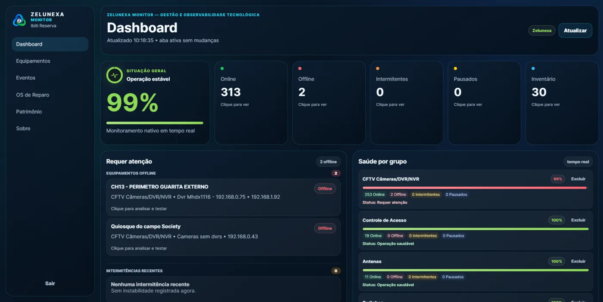
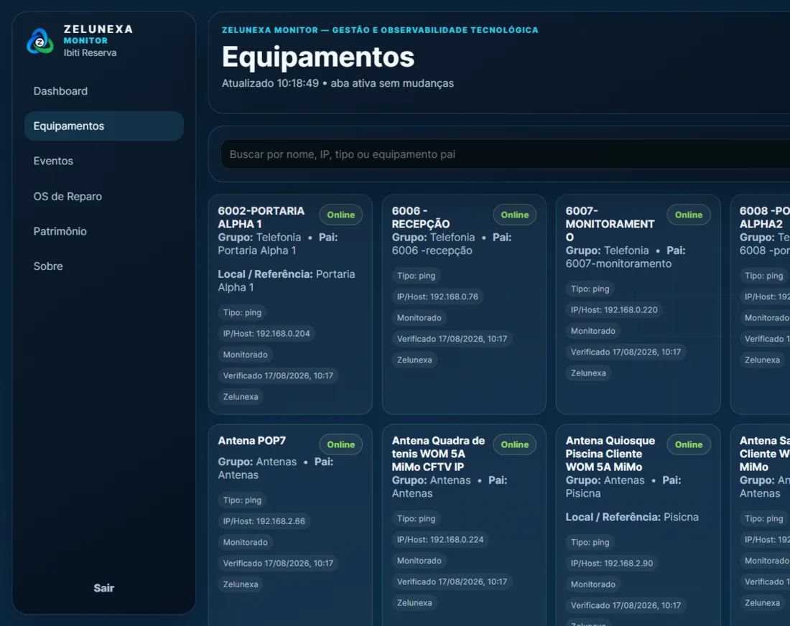
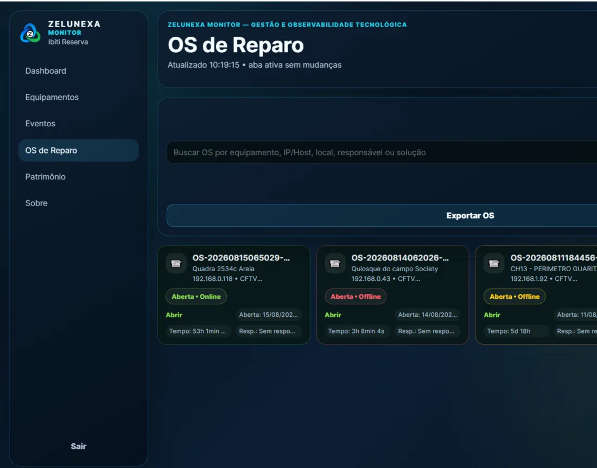
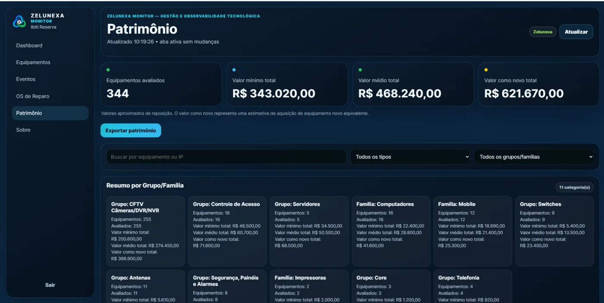

01
Falha descoberta tarde
Câmeras, acessos e rede só viram prioridade depois da reclamação ou do impacto.
O Zelunexa Monitor transforma falhas técnicas em gestão simples, rastreável e acionável — com ativos, alertas, histórico e Ordens de Serviço no mesmo fluxo.

A falha acontece silenciosamente. O custo aparece quando alguém precisa da estrutura.
Câmeras, acessos e rede só viram prioridade depois da reclamação ou do impacto.
O técnico gasta tempo procurando a origem antes de começar a corrigir.
Recorrência, prazo, responsável e ação executada ficam sem evidência.
Saber o que existe, onde está e qual patrimônio sustenta a operação.
Identificar online, offline, intermitente e pausado com histórico.
Transformar ocorrências em alertas, OS e evidências de atendimento.

Descobrir ativos e organizar a base.
Nomear, agrupar e localizar.
Acompanhar disponibilidade.
Notificar com contexto.
Abrir OS e preservar histórico.
A informação deixa de ficar dispersa em planilhas, WhatsApp ou na memória de uma pessoa.
Regras reduzem ruído e automatizam a ação quando a indisponibilidade persiste.
Oscilação registrada no histórico.
Notificação por Telegram e e-mail.
Quando a falha persiste e exige ação.
Status atualizado e histórico preservado.
Os parâmetros de detecção e automação são ajustados conforme o ambiente e o escopo contratado.

Quando a documentação é inexistente ou incompleta, o levantamento físico complementar é dimensionado separadamente.
O dimensionamento final depende da quantidade de monitorados, documentação disponível, integrações e nível de automação.
Planos e condições são dimensionados conforme a quantidade de ativos, o nível de automação e as necessidades de implantação.
*Indicadores consolidados do caso Ibiti Reserva. Resultados variam conforme o ambiente e o escopo implantado.

Não. Ele organiza o inventário, detecta indisponibilidades, preserva histórico e direciona a ação. A correção física continua sendo executada pela equipe ou fornecedor responsável.
Não, mas a qualidade da documentação influencia prazo e investimento. Ambientes sem relação confiável de equipamentos, IPs e locais podem exigir levantamento complementar.
O Monitor identifica estados, recorrências e contexto técnico para reduzir o tempo de diagnóstico. A causa raiz pode exigir validação da equipe técnica no ambiente.
Diagnóstico do ambiente → escopo e proposta → implantação orientada.